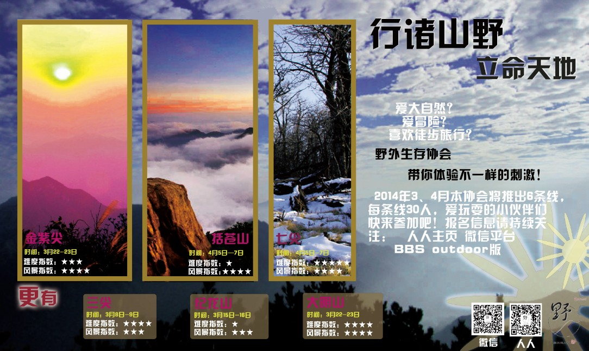
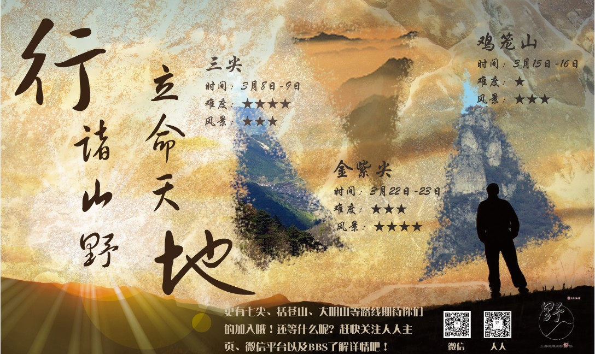
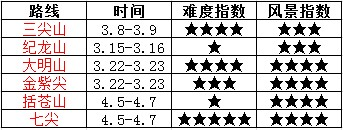
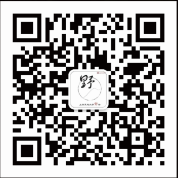

发信人: Julylovingu (小七), 信区: outdoor
标 题: 野外出行——六弹连发！
发信站: 饮水思源 (2014年02月26日00:18:42 星期三)
爱冒险？爱大自然？喜欢徒步旅行？等待多时没有出行机会？你体验生活的机会来了
！三尖、纪龙山、大明山、金紫尖、括苍山、七尖正在等待你的足迹！
2014年3月、4月，本协会将会接连推出六条线，每条线30人，名额有限，报完为止！
机不可失，失不再来！
 screen.width - 200){this.width = screen.width - 200}">
 screen.width - 200){this.width = screen.width - 200}">
具体路线预告请看这里：
 screen.width - 200){this.width = screen.width - 200}">
届时召集帖和具体报名信息会发布在
人人主页：野外生存协会
微信：交大野协
BBS：outdoor版
还等什么呢！快关注我们吧！
行诸山野，立命天地。交大野协欢迎你的参加！
PS:是不是为不能及时看到出行的消息而惆怅呢？
没关系！
请关注微信：交大野协
出行信息更加准确、及时，妈妈再也不担心我不能及时看到召集帖啦！
今后我们将主推微信平台，快打开微信扫一扫吧：
 screen.width - 200){this.width = screen.width - 200}">
--
※ 来源:·饮水思源 bbs.sjtu.edu.cn·[FROM: 211.80.60.22]
※ 修改:·Julylovingu 于 2014年02月26日00:22:10 修改本文·[FROM: 211.80.60.22]
※ 修改:·Julylovingu 于 2014年02月26日00:22:34 修改本文·[FROM: 211.80.60.22]
※ 修改:·Julylovingu 于 2014年02月26日00:24:43 修改本文·[FROM: 211.80.60.22]
※ 修改:·Julylovingu 于 2014年02月26日00:25:19 修改本文·[FROM: 211.80.60.22]
※ 修改:·Julylovingu 于 2014年02月26日13:36:28 修改本文·[FROM: 10.184.140.140]
|